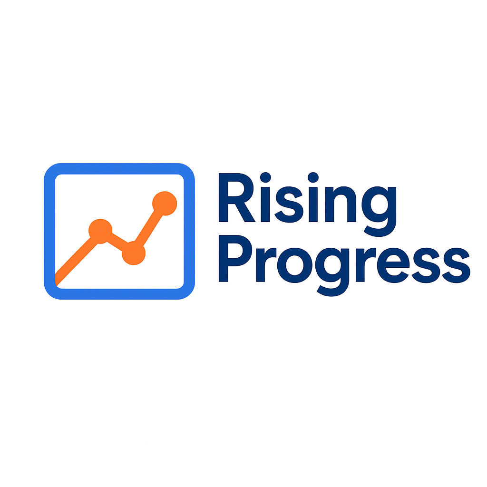

Clear progress. Direct insights.
Advisory led, technology enabled, and focused on delivering visibility.
Rapid to deploy. Seamless to integrate. Low overhead. Competitive pricing.
Schedule a Demo
Launch the Tool
What is at Stake When Problems Go Unnoticed?
Missed deadlines
Budget Overruns
Misaligned focus
Too often, project progress relies on intution, not data. Rising Progress reveals risk before impacting delivery.
Your Strategic Progress Advisory Partner
Assess
We help determine the essential metrics to track.
Integrate
We guide rapid deployment leveraging your existing team's strengths.
Empower
One-click health insights for decisive reporting.
The Progress Engine
- A streamlined tool
- Minimal input
- Quick integration
- Early risk detection
- One-click reporting
- Actionable visibility
Advisory-Led Integration
We assess your needs and set your team up for long-term success.
Step 1: Advisory-guided setup
- Identify team needs
- Customize tracking
- Establish reporting process
Step 2: Empowered, self-directed success
- Track progress independently
- Ongoing actionable reporting
- Ongoing tool access with
advisory support available upon request
- Drive results with confidence